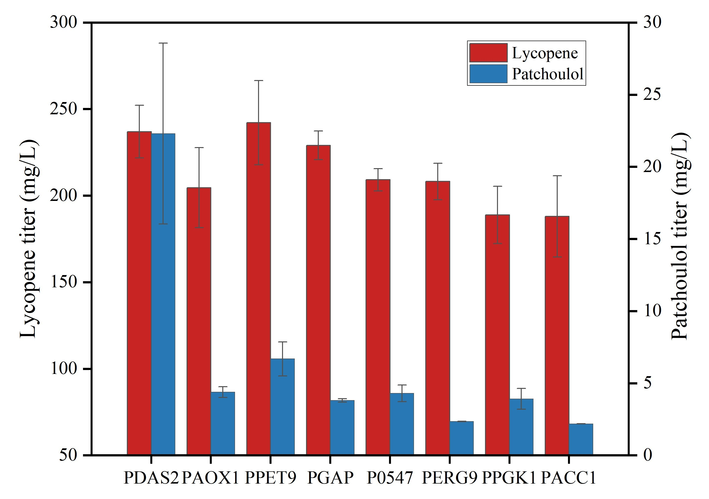
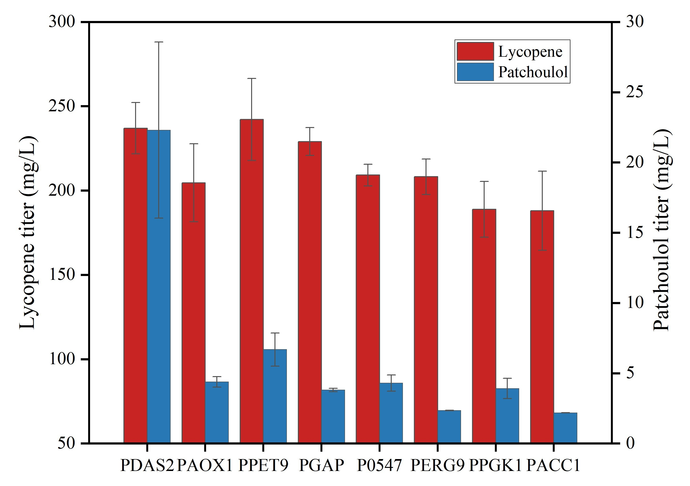

In this section, we present all the experimental works performed during our iGEM year.
Through preliminary design and engineering, we have obtained ideal experimental results. After engineering, we also demonstrated our engineering success more completely. We start here with the result of promoter screening and PTS mutation; dyeing and visualization are presented thereafter(Fig.1).
Fig. 1 Experiment construction of FUNCDYES.
1. Characterization of Fluorescence Intensity
(1) Purpose of the experiments
In order to screen according to the transcriptional intensity of the promoter, we first selected EGFP (enhanced green fluorescent protein) as the reporter gene. By detecting the EGFP fluorescence and optical density at 600 nm (OD600), the promoter activity can be preliminarily and intuitively judged.
(2) Experiments
• Shaker Flask Cultivations
The engineered yeast 2OZPP which had the ability to express the lycopene synthetic genes from Corynebacterium glutamicum ATCC13032 with the PAOX1 promoter was first inoculated into 10 mL of BMGY medium in a 50 mL Erlenmeyer flask. The cells were grown overnight at 30°C with shaking at 250 rpm. Then, the main cultures were inoculated into a 250 mL Erlenmeyer flask, containing 25 mL of BMMY medium (yeast extract 1%, peptone 2%, YNB 1.34%, potassium phosphate (pH 6.0) 100 mM, and methanol 1%) with an initial OD600 of 1 and cultured in a shaking incubator under the same conditions for 120 h. 1% (v/v) fresh methanol was added each every 24 h. Samples were taken every 24h to measure the OD600 of the fermentation broth and the fluorescence of the supernatant.
• Fluorescence Detection of EGFP
For the samples taken after each 24h of fermentation, we conducted the following experimental operations. Add 300 μL Tris-HCl buffer, wash the yeast strain by vortex shaking, centrifuge at 8000 R/min and 4℃ for 1 min to remove the supernatant. Repeat this process three times. After the last washing, resuspend the yeast strain with an appropriate amount of Tris-HCl buffer. Take the same volume of yeast suspension three times in parallel to detect the fluorescence intensity (excitation wavelength 488 nm, emission wavelength 520 nm), and determine the EGFP fluorescence and optical density at 600 nm (OD600).
(3) Results and discussion
After quantifying fluorescence using the microplate reader and measuring od at 600nm, we preliminarily ranked the promoter strength according to the fluorescence per OD (Fig.1). The order of the promoters from strong to weak is: PDAS2, PAOX1, P0547, PGAP, PPET9, PACC1, PPGK1, PERG9. Overall, among the promoters we selected, the strength of methanol inducible promoters is generally greater than that of constitutive promoters, among which PDAS2 and PAOX1 are inducible promoters, and the others are constitutive promoters. To our delight, Pichia pastoris strain with PDAS2 has stronger transcription intensity. The above results also paved the way for us to replace EGFP gene in P.pastoris genome with PTS gene in the future.

Fig.1 Fluorescence per OD of different promoters within 120 hours.
2. The Analysis of Lycopene and Patchoulol
(1) Purpose of the experiments
The strength of the promoter can be characterized by detecting the fluorescence of green fluorescent protein, but ultimately, we need to analyze the terpenoid production of engineering yeast co-expressing patchoulol and lycopene, and we hope to get the data that there is a trend of inverse relationship between the production of these two terpenoids through analysis. Because patchoulol is volatile and can be extracted to the outside by n-dodecane, we chose gas chromatography to quantify the yield of patchoulol. Lycopene will remain in cells after synthesis and is not volatile, so we chose high performance liquid chromatography to quantify the yield of lycopene.
(2) Experiments
• Shaker Flask Cultivations
The engineered yeast cells were first inoculated into 10 mL of BMGY medium in a 50 mL Erlenmeyer flask. The cells were grown overnight at 30°C with shaking at 250 rpm. Then, the main cultures were inoculated into a 250 mL Erlenmeyer flask, containing 25 mL of BMMY medium (yeast extract 1%, peptone 2%, YNB 1.34%, biotin 0.00004%, potassium phosphate (pH 6.0) 100 mM, and methanol 1%) with an initial OD600 of 1 and cultured in a shaking incubator under the same conditions for 120 h. 1% (v/v) fresh methanol was added each every 24 h[1].
• Analysis of Terpenoids
The quantification of lycopene was performed on a Waters 2695 series HPLC system (Waters Technologies, Milford, MA, USA) equipped with Waters C18 column (4.6 mm×250 mm) and UV/VIS detector detected signals at 450 nm (Fig.2). For separation, samples were eluted with an isocratic elution program acetonitrile-isopropanol-methanol (50:20:30 v/v) at a flow rate of 1 mL/min at 40°C. The injection volume was set to 10 μL[1].
Fig.2 High performance liquid chromatogram of lycopene.
The quantification of patchoulol was performed on a GC system (Agilent 7820 a, USA) equipped with HP-5 column (30 m×0.25 mm, 0.25μM U.M film thickness) and a flame ionization detector (FID). The oven temperature shall be kept at 90℃ for 0.5 min, then gradually increased to 120℃ at the speed of 20℃/ min, then increased to 160℃ at the speed of 3℃/ min for 5 min, and finally increased to 250℃ at the speed of 20℃/ min for 10 min. Patchoulol was quantified by external standard method (Fig.3).
Fig.3 Gas chromatogram of patchoulol.
• The standard curve
By extracting lycopene standard, we obtained the standard mother liquor with a concentration of 200 μg/ml, respectively carry out a series of gradient dilutions on the standard mother liquor, and then determine the relationship between the absorption peak of the standard and the concentration of the standard according to the HPLC isocratic elution method[1]. Fit the linear regression equation y=71782x-587086, R2 = 0.9976, Y represents the peak area, X represents the concentration of the standard lycopene (Fig.4).
Fig.4 The standard curve of lycopene.
Weigh 0.5mg of patchoulol standard with an analytical balance and dissolve it in 5ml of n-dodecane. Volume it to 5ml with a volumetric flask. The concentration of the standard mother liquor is 1g / L; Dilute the standard mother liquor to 0.75g/l, 0.75g/l, 0.5g/l, 0.25g/l and 0.1g/l, and then determine the relationship between the absorption peak of the standard and the concentration of the standard according to the GC method. Fit the linear regression equation y=3×107-556362, R2 = 0.9995, Y represents the peak area, X represents the concentration of the standard patchoulol (Fig.5).
Fig.5 The standard curve of patchoulol.
(3) Results and discussion
• Production and Titers
Through quantitative analysis by GC and HPLC, we obtained the production and titer of patchoulol and lycopene of the engineered yeast transformants corresponding to different promoters. It can be intuitively found that in the inducible promoter, the production of lycopene and patchoulol of PDAS2 is the highest, and in the constitutive promoter, the production of lycopene and patchoulol of PPET9 is the highest, followed by PGAP (Fig.6&7). It is worth mentioning that because the data related to the production and titer of patchoulol on the promoter PDAS2 fluctuated greatly during the previous experiment and there was data loss, the quality of the data of PDAS2 was not good.
 

Fig.6 The production of two terpenoids(left)
Fig.7 The titer of two terpenoids(right)
• The Selection of Promoters
However, since our main goal is not only to achieve high production of lycopene and patchoulol at the same time, we also hope to reduce the by-products in the synthesis of patchoulol, which requires us to mutate and find suitable PTS genes using a quick screening method.
As mentioned in the project design, since the two terpenoids share the same precursor FPP, the promoters corresponding to the strains that make the production of lycopene and patchoulol inversely proportional to each other are particularly important in the subsequent visual screening experiments, and they can be used for the preliminary screening of PTS mutants. And we found that the production of lycopene and patchoulol of the engineering yeast strains corresponding to the promoters P0547 and PPGK1 tended to be inversely proportional (Fig.8&9).

Fig.8 Lycopene and patchoulol titer of yeast transformants corresponding to PPGK1. The lycopene production of PPGK1-1, PPGK1-2 and PPGK1-3 was 177 mg/L (15.63mg/g DCW), 194.75 mg/L (17.70mg/g DCW) and 199.95 mg/L (18.18 mg/g DCW), and the patchoulol production of PPGK1-1, PPGK1-2 and PPGK1-3 was 4.77mg/L (0.525mg/g DCW), 3.95 mg/L (0.448mg/g DCW) and 3.02 mg/L (0.343 mg/g DCW).

Fig.9 Lycopene and patchoulol titer of yeast transformants corresponding to P0547. The lycopene production of P0547-2, P0547-3 and P0547-4 was 158.69 mg/L (14.43mg/g DCW), 208.58 mg/L (19.17mg/g DCW) and 204.3 mg/L (18.07 mg/g DCW), and the patchoulol production of P0547-2, P0547-3 and P0547-4 was 5.10mg/L (0.580mg/g DCW), 3.76 mg/L (0.437mg/g DCW) and 4.02 mg/L (0.427 mg/g DCW).
Previous studies have shown that color complementary analysis is a simple and effective method to identify genes in the terpenoid biosynthesis pathway[2]. Therefore, we performed color complementation analysis on P0547-2, P0547-3, P0547-4, PPGK1-1, PPGK1-2 and PPGK1-3. 2OZPP yeast was used as the control group, and six engineered 2OZPP yeast transformants containing PTS synthesis pathway and different upstream promoters were used as the experimental group. The experimental results can be well distinguished by the naked eye from the color complementation of different yeast transformants (Fig.10), which has well proved that it is feasible to screen PTS mutants by visualized color complementation analysis.

Fig.10 Identification of two terpenoids in color complementation experiments. Blue represents the production of patchoulol, and red represents the production of lycopene
• Growth
FPP is a precursor for some other components of cell membrane in P.pastoris, such as ergosterol and farnesyl. By comparing the growth curves of P.pastoris corresponding to the promoters, we speculate that too strong promoter strength may affect the growth of the strains at the early stage of fermentation (Fig.11).
Fig.11 Growth of P.pastoris corresponding to different promoters.
It is generally believed that PAOX1, the promoter of alcohol oxidase 1 in MUT pathway, is the strongest known promoter of P. pastoris. We noticed that in our experimental results, the strength of the promoter PDAS2 was stronger than that of the promoter PAOX1 (Fig.11). When we compared the growth curves of the two, we found that the growth level of the yeast corresponding to PDAS2 during shake flask fermentation was generally lower than that of PAOX1 (Fig.12). However, we had doubts about such data results. By comparing the fermentation data of previous batches, we thought that the growth curve of different fermentation batches would have different fluctuations due to the effects of experimental operation, environment and shaking table. Therefore, we could not draw the conclusion that strong promoters would reduce the synthesis of squalene and affect the early growth of the strain through this experiment.
Fig.12 Growth of P.pastoris corresponding to PDAS2 and PAOX1.
Reference
[1]Zhang, X., Wang, D., Duan, Y., Zheng, X., Lin, Y., & Liang, S. (2020). Production of lycopene by metabolically engineered Pichia pastoris. Bioscience, biotechnology, and biochemistry, 84(3), 463-470. https://doi.org/10.1080/09168451.2019.1693250
[2]Araya-Garay, J. M., Feijoo-Siota, L., Veiga-Crespo, P., & Villa, T. G. (2011). cDNA cloning of a novel gene codifying for the enzyme lycopene β-cyclase from Ficus carica and its expression in Escherichia coli. Applied microbiology and biotechnology, 92(4), 769-777. https://doi.org/10.1007/s00253-011-3488-8
1. Construction of the mutation system
(1) Purpose of the experiment
As depicted in Fig.1, there are at least 5 kinds of by-products during the patchoulol synthesis procedure. Thus, we planned to do patchoulol synthase (PTS) mutation to increase the specificity of the enzyme, as well as a supplement of static control system.
Fig.1 Postulated reaction pathways to account for the different products generated by the patchoulol synthase from farnesyl diphosphate (adapted from Croteau et al.).
(2) Experiments
• Error-prone PCR
Generation of a maximally diverse gene library is particularly important when employing non-targeted mutagenesis strategies. The method most often used to generate variants with random mutations is error-prone PCR (epPCR). Here we use the basic method for using epPCR to generate gene variants that exhibit a relatively balanced spectrum of mutations and for capturing as much diversity as possible through effective cloning of those variants.
We chose manganese ions (Mn2+) as mutagen for patchouli alcohol synthase gene to produce random mutations. The epPCR system are showing as follows. (Tbl.1)
| Fame | Volume |
| PCR Mix | 25μL |
| Top strand primers | 2μL |
| Bottom strand primers | 2μL |
| Mn2+ | - |
| dd water | ~50μL |
Tbl.1 System of epPCR.
(3) Results and discussion
We chose different kinds of Mn2+ and tried different concertation and volume of it to construct the best mutation system. Result are showing in the table below. (Tbl.2)
| Cycle | Types of salt | Concentration | Volume | Result |
| 1 | MnSO4 | 2mM | 0.4μL | Agarose gel electrophoresis showed no bands or the wrong bands |
| 0.8μL | ||||
| 1μL | ||||
| 2μL | ||||
| 2 | MnSO4 | 8mM | 1μL | The band are right through the agarose gel electrophoresis, but the sequencing results are all wrong. |
| 2μL | ||||
| 3μL | ||||
| 4μL | ||||
| 3 | MnCl2 | 8mM | 2μL | There were much more mutations than we expected. |
| 4μL | ||||
| 6μL | The band are right through the agarose gel electrophoresis, but the sequencing results show no sign. | |||
| 8μL | ||||
| 4 | MnCl2 | 8mM | 0.5μL | There were less mutations than we expected. |
| 0.75μL | 3-5 bp mutation per 1000bp | |||
| 1.25μL | There were much more mutations |
Tbl.2 Result of PTS mutation.il
From the results above, we finally chose 0.75μL 8mM MnCl2 as our mutants to built our mutation system.
2. Construction of a rapid selection system of mutants
(1) Purpose of the experiment
As we know, traditional method to text the titer of terpenoids we use either GC or HPLC, which are not only complex but time consuming. Thus, based on the relationship between lycopene and patchoulol production in P.pastoris we have already mentioned, we developed a visual method to screen for efficient mutations in PTS.
(2) Experiments & Result
As mentioned before, we selected two promoters, P0547 and PPGK1, from the promoter library as the promoters of the mutant PTS, and transferred the mutant PTS into P.pastoris strain 2OZPP by homologous recombination.
P.pastoris strain 2OZPP and strains containing unmutated PTS with P0547 and PPGK1 as promoters were used as controls, and strains with mutated PTS were inoculated on BMMY solid plates at 30℃ and given 1% methanol daily. After 96h of incubation, we observed colonies of different colors (Fig.2).

Fig.2 First round of PTS visualization screening.
We observed that colonies growing on the edges of the plates were generally lighter in color, and we believe that this situation is due to the edge effect caused by nutrient limitation at the edges of the plates, which can mislead the judgment of the PTS mutation effect. To reduce the interference of edge effects, we replaced the smaller plates and re-cultured and re-screened for the lighter colored strains.
In the second round of screening, we found several strains that were lighter in color and might be good mutants (Fig.3).
Fig.3 Second round of PTS visualization screening. The left one is the result of pPICZA-PGAP-mut PTS-His. The left one is the result of pPICZA-P0547-mut PTS-His.
Due to time constraints, we did not obtain enough positive strains, and we plan to continue to expand the capacity of the PTS library to screen for more positive strains.
Considering that the issue of nutrient limitation may interfere with the judgment of strain color when cultured on solid plates, we will select strains with lighter color and transfer them to BMMY liquid medium to be cultured in 96-well plates for screening.
Strains that are lighter in color in the 96-well plates will be transferred to shake flasks for fermentation and finally for quantitative validation of patchoulol yield. The best mutant PTS will thus be selected.
Screening in 96-well plates and shake flasks was not carried out due to time constraints, and we will continue to do the screening in future experiments.
Dynamic regulation with light-control system
1. Purpose of the experiment
The idea of constructing a light-control module in our host is derived from our previous wet lab results. As we discovered that by applying mere static control, our function of interest can not be reach. We turn to seek a dynamic control strategy to meet our need of changing the proportion of the two terpenoids at our will.
2. Experiments
In practice, we synthesize the parts, BBa_K4263009 and BBa_K4263010, and construct them on the same vector pPICZA. Four groups of our host, three parallel tests each, are set with difference in the promoter which control the expression of EL222 in 250ml shake flasks. All of the flasks are cultured for 48h, and methanol was added every 24h.
As for hardware, we build up a LED device to spray blue light. LEDs (5W, 465 nm) are hang above the flasks to create a blue light environment. The incubator was sealed with black cloth to block the blue light, preventing it from doing harm to the people passing by and reducing the influence from the outside. (Fig.1)


Fig.1 The incubator with blue light device
3. Results and discussion
The titer from each parallel is examined by GC and HPLC. (Fig.2)
For the two control groups, we can see that lycopene and patchoulol are expressed normally, compared with our previous results using static promoters. In group 3, we proved that the light-induced system is able to turn some metabolic flux to the synthesis of patchoulol, meanwhile turning down that of lycopene. For group 4, in comparison to group 3, we discovered that longer blue light induces more synthesis of patchoulol, which means that the regulation of PTS is dose-dependent on light duration.
In conclusion, our blue light-induced system is proved to be effective in practice.
| Names | Dark | Blue light | Strain |
| Control-1 | 0 | 48h | 2OZPP |
| Control-2 | 0 | 48h | 2OZPP+PTS |
| Longer blue light duration | 0 | 48h | 2OZPP+PGAP-TF-C(120)5-PTS |
| Shorter blue light duration | 16h | 32h | 2OZPP+PGAP-TF-C(120)5-PTS |


Fig.2 Titer of lycopene and patchoulol of each parallel. The lycopene production of Control-1, Control-2, Longer group and Shorter group was 141.58 mg/L (15.42 mg/g DCW), 141.39 mg/L (15.24 mg/g DCW), 60.34 mg/L (9.42 mg/g DCW) and 121.05 mg/L (12.33 mg/g DCW), and the patchoulol production of Control-1, Control-2, Longer group and Shorter group was 0 mg/L (0 mg/g DCW), 1.21 mg/L (1.64 mg/g DCW), 3.13 mg/L (5.96 mg/g DCW) and 1.36 mg/L (1.85 mg/g DCW).
Our next question is, naturally, whether the system efficient or not. How can we evaluate the performance and what can we do to improve it. Thus, we use EGFP as the target gene to figure out certain parameters of the system. However, limited time of wet lab disable us from continuing on our design, and we are not ready to present our progress here. The characterization of the parts may be done in the future.
1. Purpose of the experiment
After our design, we got the great cell factory that produces FUNCDYES! Next, we performed experiments to obtain FUNCDYES for dyeing to finish our downstream experiment.
2. Experiments & Result
In the industrial production scenario, we hope to use volatile solvent as the extractant to extract patchoulol during fermentation and then concentrate it for dyeing. However, in the laboratory, we used n-dodecane as the extraction agent in the fermentation process, which is not easy to concentrate. Therefore, in the subsequent dyeing experiments, we used store-bought patchoulol for dyeing experiment.

Fig.1 The fragrant red silk we dyed.
At the end of fermentation, the fermentation broth was collected and centrifuged to obtain lycopene containing cells, which were then broken to obtain lycopene dissolved in the extractant - ethyl acetate. The dye containing lycopene was obtained by concentrating it for an appropriate time. We added some pure patchoulol to it, and we got our FUNCDYES! We soaked the silk in FUNCDYES, and after 15 minutes of dyeing, we succeeded in getting the red silk with fragrance! (Fig.1)
Next, we experimented with varying the concentration of lycopene to obtain silks of different colors. Also, by changing the ratio of patchouli alcohol to lycopene, we obtained silks with different aromatic intensity and color shades. (Fig.2)

Fig.2 The silk of different color we dyed
At the same time, we verified the dyeing effect of silk under different concentrations of lycopene. (Fig 3)
We observed the color and fragrance persistence of the silk obtained by dyeing, and we found that the color of the silk lightened slightly over fifteen days, but no significant fading occurred, and the fragrance persisted.
Although we managed to get fragrant red silks, they are not very bright in color. In the following experiment, we began to think about whether we could achieve better.
Figure 3 Silk dyed with different concentrations of lycopene
| Time | Temperature |
| 5min | 0℃ |
| 5min | Room temperature |
| 5min | 60℃ |
| 15min | 0℃ |
| 15min | Room temperature |
| 15min | 60℃ |
| 1h | 0℃ |
| 1h | Room temperature |
| 1h | 60℃ |
Tbl.1 Grouping of time and temperature selection
We changed the dyeing time, temperature, hoping to find the most suitable dyeing conditions. It was found that prolonging the staining time had no significant effect on the dyeing results, so in the subsequent dyeing experiments, we set the staining time at about 5 minutes. Moreover, the effect of temperature on the dyeing effect is not significant, and considering the cost of temperature control in industry, we believe that dyeing at room temperature is sufficient.
In addition, we have looked up the common composition of silk dyes on the market and found that most of them are water soluble, while lycopene and patchoulol are hydrophobic substances. Therefore, we set different groups to explore the more appropriate solvent.
| Grouping of solvent selection experiments | ||
| Group Name | Solvent | Additional treatment |
| A | Ethyl acetate | / |
| B | Ethyl acetate | Add 0.5 g/mL of NaCl |
| C | Ethyl acetate | Add 1 g/mL of NaCl |
| D | Ethyl acetate: Water=1:1 | Use ultrasound during dyeing |
| E | Ethyl acetate: Water=1:1 | Add tween 80 |
| F | Ethyl acetate: Water=1:1 | Add 0.5 g/mL of NaCl |
| G | Ethyl acetate: Water=1:1 | Add 1 g/mL of NaCl |
Tbl.2 Grouping of solvent selection experiments
It was found that the addition of sodium chloride did have a positive effect on the coloring of the dye, but only in the solvent containing water. However, in solvents containing water, the phenomenon of uneven staining is more likely to occur. The results of the rest of the experimental groups showed that none of them stained as well as the pure ethyl acetate as a solvent (Fig 4). Therefore, we finally chose ethyl acetate as our solvent.

Fig.4 Experimental results of solvent alteration
Since we did not get the desired results in our experiments with staining conditions, we came to the staining plant hoping to talk to people with more experience and get some inspiration.
Click this link(part one about Explore the significance) to see what we communicated~
After talking with other experienced people, we have suggested some possible experimental improvements in the future. We proposed the idea of using cyclodextrins or liposomes to encapsulate the lycopene and patchoulol molecules, and by modifying the encapsulants, they would chemically react with the amino acids in the silk, thus giving the dyed silk superior color fastness and a longer lasting fragrance. It also occurred to us that it might be possible to use a supercritical CO2 extractor to dye silk as a solution to the problem that dye molecules are only soluble in organic reagents.
Although we did not obtain the best experimental results due to technical limitations, we believe that these problems can be optimized in the process of industrial production.